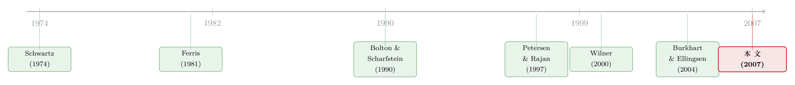

为什么宁愿被供应商「宰」，也不去找银行？——一笔贵得离谱的商业信用账
本文读的是 Cuñat (2007, Review of Financial Studies)：商业信用 (trade credit) 看上去贵得离谱（年化利率动辄 44%），却被企业广泛使用、且由供应商而非银行提供。作者用一个动态契约模型给出了答案——供应商之所以能放贷，是因为他握着「断供」这把比银行更硬的催债武器；而它收取的高利率，并不是真的「贵」，而是把违约溢价、保险溢价与自身更高的资金成本一并打了进去。供应商既是「债务催收员」，也是「流动性保险商」。
1 一个贵得不像话、却人人都在用的东西
先讲一个让所有人第一次听到都会皱眉的数字。
商业信用最常见的合约叫「2–10 net 30」：如果你在收货后 10 天内付款，可享 2% 的折扣；否则，你可以拖到第 30 天再付全款。听上去人畜无害。但换个角度算一笔账——那 2% 的折扣，本质上是你多占用 20 天资金所付出的利息。20 天 2%，折算成年化是多少？大约 44%。
44%。这是什么概念？这是连信用卡都自愧不如的高利贷水平。而 Ng, Smith and Smith (1999) 还发现，「8–30 net 50」这样的合约在美国也不少见，它的隐含年化利率高达 358%。
于是矛盾就摆在眼前了。一边是高得离谱的隐含利率，一边却是企业对商业信用近乎上瘾的依赖。如表 1 所示（论文的描述性统计），商业信用大约占一家代表性企业总资产的四分之一、短期债务的一半：英国 FAME 数据库里，商业信用/总资产 = 25%、/总债务 = 41%、/短期债务 = 47%；美国 NSSBF 样本里则是 17%、35%、50%。
这就引出了所谓的「商业信用之谜」(trade credit puzzle) 的两个核心问题：
第一，为什么商业信用看上去这么贵？ 第二，既然这门生意这么赚钱，为什么是供应商而不是银行在做？
毕竟，银行有的是钱、有的是专业的放贷能力，按理说它应该抢着把这块利润丰厚的业务接过来，给企业多开几条专门用于商业往来的授信额度。可现实是，银行偏偏不做，这门「高利贷」生意稳稳地落在了供应商手里。
这篇 2007 年发表在 RFS 上的文章，正是要解开这个谜。它的回答，可以浓缩成一句话：商业信用的高利率只是「表面上贵」——它定价是正确的，补偿的是供应商更高的资金成本、违约风险，以及为客户提供流动性保险的成本。
2 真正关键的一步：供应商手里那把银行没有的刀
要理解整个故事，得先抓住一个最核心的张力：契约的有限执行 (limited enforceability)。
在现实里，企业的很多回报是不可验证的 (nonverifiable)——你赚了多少钱、现金流是高是低，外人看不清，法庭也无从据此强制执行一纸债务合约。于是问题来了：如果借款人赖账，债权人凭什么把钱要回来？
银行的答案是抵押品 (collateral)。它只敢借给你抵押品能覆盖的那部分钱——这是一种向后看 (backward looking) 的逻辑，盯的是你过去积累下来的家当。
而供应商的答案完全不同。供应商卖给客户的，不只是钱，还是生产所必需的中间品 (intermediate goods)。一旦客户赖账，供应商可以做一件银行永远做不到的事——停止供货。如果这些中间品是为这个客户「量身定制」的专用品 (specific goods)，那么断供的威胁就足够致命：客户找不到替代供应商，只能退回到效率低下的状态。
这正是供应商相对银行的「比较优势」：它不靠抵押品催债，它靠的是掐住你生产命脉的能力。这是一种向前看 (forward looking) 的逻辑——商业信用的额度，取决于这段供应商—客户关系未来的价值。
这个洞见其实并不全新。Petersen and Rajan (1997) 早就讨论过供应商在催债上的优势，但一直没有人把它形式化。和这篇文章思想最接近的，是 Bolton and Scharfstein (1990)：在他们的模型里，一个垄断融资方用「不再续贷」的威胁来逼借款人还钱。供应商「不再供货」的威胁与之神似——但有一个关键区别：供应商不需要是垄断者，它只需要在生产某种特定投入品上有优势就够了。
接着，一个自然的问题是：这把刀，是不是双刃的？
是的。这正是本文比 Bolton-Scharfstein 更深一层的地方。同样一段「让双方都难以被替代」的关系链，在赋予供应商催债权力的同时，也反过来逼着供应商在客户遇到困难时出手相救。因为如果客户因为一次临时的流动性冲击而垮掉，供应商失去的是这段关系未来全部的剩余 (surplus)。所以供应商会预先料到「将来我可能得帮他一把」，于是它会事先就在商业信用合约里收一笔保险费。
这就是标题里那两个身份的由来：供应商既是 债务催收员 (debt collector)，又是 保险商 (insurance provider)。而我们在现实中观察到的、那个广泛存在的「延迟付款 (late payment)」现象——客户拖过约定日期才付钱、还往往不被罚息——恰恰就是这种流动性救助的真实形态。论文里的数据很有意思：NSSBF 样本中 46% 的企业承认过去一年有过逾期付款，而其中 43% 的合约根本没有明确的罚息条款。
换句话说：所谓的「保险溢价」，量的就是这个延迟付款选择权 (late payment option) 的价值。
3 模型：把这段「关系」一砖一瓦搭出来
这是一篇有完整理论模型的论文，所以我们值得花点笔墨，把它的骨架一步步拆开。它是一个离散时间、无限期的动态模型。
3.1 三类主角
- 银行 (banks)：口袋很深，资金无限，贴现因子为 \(\delta < 1\)，对应市场利率 \(r\)，满足 \(\delta = 1/(1+r)\)。它愿意以市场利率借贷。
- 供应商 (suppliers)：同样口袋很深、贴现因子也是 \(\delta\)（因此一开始它和银行的资金成本相同；后文会放松这一假设，允许供应商面临更高的资金成本）。它额外还能为客户提供生产所需的中间品。
- 客户 (customers)：财富有限，记为 \(w_t\)，且相对没耐心——贴现因子 \(\rho < \delta\)。每个客户一次只能经营一门生意。
还有一条关键假设：
Assumption 1. 供应商的数量多于客户。
这保证了在没有「关系」绑定时，客户可以零成本地找到按成本价供货的供应商——也就是说，供应商的市场势力，完全来自关系本身，而非垄断。
3.2 技术：一个让关系「长出来」的马尔可夫过程
客户每期投入 \(I_t\) 购买中间品，期末产生回报 \(Y_i I_t\)，其中生产率 \(Y_i\) 取两个值 \(Y_h\) 或 \(Y_l\)（\(Y_h > Y_l\)）。拿到高回报的概率，取决于用哪种技术：
- 创业技术 (startup technology)：用通用投入品，高回报概率为 \(\alpha\)；
- 成熟技术 (mature technology)：用专用投入品，高回报概率为 \(\gamma\)，且 \(\gamma > \alpha\)。
成熟技术更高效，但它绑定在某一个特定的供应商—客户搭档上。技术的演化是一个马尔可夫过程：用创业技术时，一旦成功（概率 \(\alpha\)）就升级到成熟技术；用成熟技术时，一旦失败（概率 \(1-\gamma\)）就跌回创业阶段。
这个设定的妙处在于：关系是「干」出来的，而不是天上掉下来的。一家新生企业必须先用低效的通用技术摸爬滚打，成功之后才进入高效但专用的成熟阶段。一旦供应商或客户撕毁关系，这份生产优势就归零，客户被打回创业起点。这就是供应商催债威胁可信的根基。
成熟技术里还埋了一个雷：流动性冲击 (liquidity shock)。在回报实现之前，以概率 \(u\) 发生一次冲击，修复它需要额外投入 \(L I_t\)。若不投，项目必败（只剩低回报）。这里有一条关键假设保证「救」总是划算的：
$$L < \gamma\,(Y_h - Y_l)$$
这个流动性冲击的设定，借鉴自 Holmström and Tirole (1998) 的经典框架。它故意只发生在成熟阶段——因为只有在这里，「供应商要不要救客户」这个问题才真正有趣。
3.3 抵押品、消费与不可验证的回报
模型把回报拆成三块。客户在生产中要消费掉 \(c I_t\)（可理解为私人收益、工资或最低分红）；另有比例 \(\theta I_t\) 的价值可作抵押品。于是回报可以重写为：
$$Y_h I_t = c I_t + \theta I_t + R_h I_t$$ $$Y_l I_t = c I_t + \theta I_t + R_l I_t$$
这里 \(R_h I_t\) 和 \(R_l I_t\) 就是那块真正不可验证、无法写进法庭可执行合约的回报。客户能从银行借到的钱，上限只有 \(\delta \theta I_t\)（即抵押品折现后的价值）；任何超出这个数的借款，都必须靠某种可信的威胁来执行——而这，正是供应商的用武之地。
两条参数假设界定了问题的有趣区间：
$$\delta\,[\,\theta + \gamma R_h + (1-\gamma) R_l - uL\,] < 1$$ $$\rho\,[\,c + \theta + \alpha R_h + (1-\alpha) R_l\,] > 1$$
前者（Assumption 4）说：哪怕用上成熟技术、用银行的贴现因子 \(\delta\)，扣掉必须消费的部分后，项目的期望折现回报也盖不住投资成本——这排除了「无限投资」。后者（Assumption 5）说：即便在创业阶段，项目的净现值 (NPV) 也是正的。两者合起来，就刻画出一个「项目值得做、但客户自己融不到足够资金」的世界。
3.4 价值函数与均衡：核心的贝尔曼方程
模型有两个状态变量：客户的财富 \(w_t\) 和所处的技术阶段。由于一切都对财富线性，价值函数可写成「单位财富的价值」：创业阶段记为 \(S\)，成熟阶段记为 \(M\)。
均衡的猜想是：客户把所有可用资金都投进项目；当成熟阶段遭遇流动性冲击时，供应商出钱把客户救出来；客户不做任何预防性储蓄、也不另买保险——因为这样反而能「逼」供应商来兜底。
在这个猜想下，两阶段的贝尔曼方程是：
$$S w_t = c I^S + \rho\,[\,\alpha\, M w^h_{t+1} + (1-\alpha)\, S w^l_{t+1}\,] \qquad (1)$$
对成熟阶段，这就是整个模型最核心的一个递归方程，我们把它逐项标注出来：
读懂这个方程，就读懂了整篇文章的引擎：成熟企业当下的总价值，等于即时消费，加上「继续高效」与「跌回起点」两种未来的概率加权折现。正是因为「跌回起点」这条路代价高昂（\(\gamma\) 越大、关系越值钱），供应商才既有底气催债、又有动机救助。
由于投资与期末财富都能写成初始财富 \(w_t\) 的线性函数，方程 (1) 可以化简成一个不依赖 \(w_t\) 的纯标量方程，\(M\) 也同理。求解这套不动点，就得到均衡里的全部内生量：投资规模、商业信用额度、以及那个关键的隐含利率。
3.5 谈判：高利率到底从哪儿冒出来
剩下的就是讨价还价了。供应商在每期期初对客户做一个「要么接受、要么走人 (take it or leave it)」的报价；客户要么接受，要么换一家供应商（但换了就得退回创业技术）。唯一的子博弈完美均衡，是供应商把客户压到「接受与走人无差异」的那条线上。
于是，那个看上去高得吓人的隐含利率，被清清楚楚地拆成了三块：
- 资金成本：若供应商的资金成本高于银行（后文放松假设的情形），它会把这部分成本转嫁给客户；
- 违约溢价 (default premium)：供应商用它那份额外的执行力，去给「不可验证、随机」的回报放贷——这让商业信用天然比银行债更危险，必须索取风险补偿；
- 保险溢价 (insurance premium)：供应商预见到自己将来要为客户的流动性冲击兜底，于是预先收一笔保险费。
更妙的是一个放大效应 (multiplier effect)：因为商业信用是向前看的（取决于关系的未来价值），而银行信用是向后看的（取决于已积累的抵押品），两者会相互加强——哪怕只是一段有限的关系，也能同时显著抬高商业信用与银行信用的使用量。这也解释了模型的另一个反直觉结论：在均衡里，所有企业都同时使用商业信用和银行信用，即便银行是更有竞争力的放贷方。
4 把理论拉到地面：英国企业的数据怎么说
光有漂亮的模型不够。文章第三节用一个英国企业面板检验了模型的几个定性预测。数据来自 FAME（Financial Analysis Made Easy，Bureau Van Dijk 数据库，覆盖二十多万家各种规模的英国企业，样本期约 1993–2002）。观测单位是「企业—年」，方法上用了处理动态面板的 Arellano and Bond (1991) 的 GMM 估计来对付滞后被解释变量带来的内生性。
模型最想检验的，是这样几条逻辑链：
预测一：商业信用应随供应商—客户关系的延续而上升。 如果关系需要时间「养」，那么商业信用就该随关系演进而增长。数据确实支持这一点——但有个非线性的细节耐人寻味：新生企业一开始的商业信用水平很低，但在生命周期的最初几年里急速攀升。这恰恰印证了「关系链需要时间建立」的假说，而不是简单的「越老的企业商业信用越多」。
预测二：供应商会在客户遇到临时困难时施以援手。 文章用企业业绩和流动性冲击的度量，去捕捉那些「客户经营出小问题、银行不肯帮、供应商却伸手」的情形。证据与模型一致：商业信用在客户面对临时流动性冲击的时期反而更高——供应商通过为更高比例的采购融资、延长账期、或最常见的「容忍逾期付款」来提供这种救助。
预测三：商业信用应与抵押品水平负相关。 这是模型一个干净的推论：抵押品越多，企业越能从银行拿到钱，对供应商「额外执行力」的依赖就越低。数据显示，商业信用确实与抵押品水平负相关，且 3.2 节进一步发现，商业信用与银行信用的「配比」对企业抵押品水平高度敏感——这正是模型相对 Biais and Gollier (1997)、Frank and Maksimovic (1999) 那类「单一垄断融资方」解释的优势所在。
需要诚实地说一句：这篇文章的实证是对模型定性预测的检验，主打的是「符号和方向对不对」，而非一个干净的因果识别设计。它没有外生冲击、没有断点、也没有双重差分；关系的演进、业绩、抵押品都是内生的。Arellano-Bond GMM 缓解了动态面板的偏误，但「关系长度→商业信用」背后仍可能潜伏着遗漏变量。把它读成「与理论一致的相关性证据」，而不是「因果效应」，才是恰当的姿态。
5 文献脉络
把这篇文章放回它所在的研究长河里，故事会更清楚。
最早，人们用交易成本和纯财务动机来解释商业信用：Schwartz (1974)、Ferris (1981)、Emery (1984) 这一脉，强调供应商在金融市场上的某种比较优势。接着，信息视角登场——Smith (1987)、Brennan, Maksimovic and Zechner (1988)、Mian and Smith (1992) 把商业信用看作甄别客户质量、解决信息不对称的工具。集大成的综述当属 Petersen and Rajan (1997)，他们系统梳理了「理论与证据」，并明确提出了供应商在催债上的优势——但停在了直觉，没有形式化。

与此同时，另一条「契约执行与清算」的暗线也在生长。Bolton and Scharfstein (1990) 用「不再续贷的威胁」奠定了执行力的范式；Hart and Moore (1994, 1998)、Kiyotaki and Moore (1997) 把「需要外部威胁来执行债务」写进了一代经典模型。再往后，一股新潮流聚焦商业信用在清算与重组中的角色：Frank and Maksimovic (1999)、Santos and Longhofer (2003) 强调供应商在变卖中间品上的优势，Wilner (2000) 则指出供应商在重组时会比银行做更多让步，从而专门服务于低信用客户。Burkhart and Ellingsen (2004) 又从中间品「相对现金的不流动性」出发，给出了另一种解释。
本文 (Cuñat, 2007) 的位置，正是在这两条线的交汇处：它把 Petersen-Rajan 的「断供执行力」直觉第一次形式化，又用「同一段关系既能催债、也逼出救助」这一点，把保险溢价写进了商业信用的定价里——这是它区别于 Bolton-Scharfstein 的真正贡献。
关于「商业信用在生产网络里如何流动」这一更现代的延伸，可参见《谁欠谁的钱，藏在它离餐桌有多远》；而本文「关系的价值驱动信贷供给」的逻辑，与银行关系借贷那条线也遥相呼应，可对照《银行为什么舍得先亏本拉客？》。
6 评论与延伸（Q&A + 研究方向）
(a) 几个可能的疑问
Q：商业信用的 44% 年化利率，到底是不是「真的贵」？
按本文的逻辑，不是。这 44% 里塞进了三样东西：供应商更高的资金成本、对不可验证回报放贷的违约溢价、以及为客户兜底流动性冲击的保险溢价。扣掉这三块，商业信用其实是被正确定价的。它贵的「表象」，来自合约结构（折扣换早付款）让利率显性化，而银行贷款里这些溢价是隐性的。
Q：本文和 Bolton-Scharfstein (1990) 到底差在哪？
两点。其一，Bolton-Scharfstein 需要一个垄断融资方，本文的供应商只需在生产特定投入品上有优势，不必垄断；其二，也是更本质的——本文里同一段关系是双向的：它既给供应商催债的权力，也逼供应商在客户有难时救助。于是「保险溢价」成了内生的定价成分，这是 Bolton-Scharfstein 框架里没有的。
Q：既然银行更有竞争力，为什么均衡里企业还要同时用银行信用和商业信用？
因为两种信用的「抵押逻辑」根本不同。银行信用向后看，盯抵押品（上限 \(\delta\theta I_t\)）；商业信用向前看，盯关系的未来剩余。抵押品撑不起的那部分融资缺口，只能靠供应商的执行力来填。所以即便银行更便宜，企业也会先用满银行额度，再用商业信用补足——两者是互补而非替代。
Q：为什么「逾期付款」反而被当成好事？
在本文的语言里，逾期付款不是违约，而是保险赔付的实现形式。供应商事先收了保险费，承诺在客户遇到临时冲击时给予宽限——容忍逾期、且常常不罚息，正是这份「延迟付款选择权」被行权。数据上
46%的企业逾期、43%的合约无罚息，与这个解释吻合。
Q：「商业信用随企业年龄上升」是不是早就被人发现了，本文有何新意？
既有文献（如 Berger and Udell, 1998）确实发现年轻、高成长企业用更多商业信用。本文的新意在于揭示了一个非线性：新生企业起点很低、随后几年急速攀升。这把焦点从「年龄」转向了「关系链的建立速度」——支持的是「关系需要时间养成」这一机制，而不仅仅是「年轻企业融资难」。
Q：实证能支撑「因果」吗？
谨慎地说，不能。这是对模型定性预测的检验，识别上依赖 Arellano-Bond GMM 处理动态面板，但关系长度、业绩、抵押品都是内生的，缺少外生冲击。它提供的是「与理论一致的相关性」，把它当因果效应来读会过度解释。
(b) 几个可能的研究问题与提案
1. 用一次外生的「断供能力」冲击来识别催债渠道。
【经济故事】本文的核心机制是供应商「断供威胁」的可信度。如果能找到一个外生改变这种可信度的事件——比如某类专用投入品突然出现了可替代的进口来源（关税变动、贸易协定），供应商的执行力会被削弱，商业信用应随之收缩。 【可行性】中。需要细分行业的投入品贸易数据 + 企业层面的应付账款，识别可借助关税/贸易冲击做 DiD。难点在于把「专用性」量化到可操作的处理变量。
2. 把保险溢价与违约溢价分开测出来。
【经济故事】本文理论上把高利率拆成保险溢价、违约溢价、资金成本三块，但实证没有把它们分别识别出来。能否用逾期付款的频率/无罚息比例去捕捉「保险溢价」，用客户信用质量去捕捉「违约溢价」，从而对三块做一次分解？ 【可行性】中到低。需要带合约条款（折扣、账期、罚息）与逾期记录的微观数据，这类数据稀缺（NSSBF 是横截面）。识别上要小心保险与违约的混淆。
3. 商业信用与公司债/信用市场的替代关系。
【经济故事】本文讲银行信用与商业信用的互补。一个自然的延伸：当企业能进入公开债市场（发债）后，对供应商「执行力融资」的依赖是否下降？尤其是债券契约 (covenants) 与抵押安排会如何改变这一配比？ 【可行性】高。Compustat/Capital IQ 有应付账款与债务结构，债券层面可用 Mergent FISD。可用企业首次发债（信用评级跨越投资级门槛）作为准自然实验。这与信用市场、抵押品定价的研究天然衔接。
4. 外资供应商 vs 本土供应商的「保险」差异。
【经济故事】供应商的救助能力取决于它自身的资金成本与对客户关系的重视。外资/全球供应商面对本地流动性冲击时，是否更不愿提供延迟付款式的救助？这会把「外资持有人/外资关联方在压力时期是否更脆弱」的问题，从证券市场延伸到生产网络。 【可行性】中。需要带供应商国籍信息的供应链数据（如 FactSet Revere、海关进出口记录）。识别可借助本地需求冲击或汇率冲击。
5. 流动性危机中的商业信用网络传染。
【经济故事】本文把流动性冲击设为单个客户的事件。但如果冲击是系统性的（如 2008、2020），供应商自己也缺钱时，「保险」会不会集体失效、反而沿供应链放大冲击？ 【可行性】高。可用生产网络数据（投入产出表 + 企业关联）在危机窗口做事件研究，度量应付/应收账款的同步收缩，这与「危机中的流动性提供」文献直接对接。
7 我的判断
这篇文章的贡献是概念上的而非实证上的：它把「供应商比银行更会催债」这个流传已久、却始终停在直觉的想法，第一次装进了一个自洽的动态契约模型，并且漂亮地多走了一步——揭示出同一段关系链如何同时孕育出催债权力与救助义务，从而把「保险溢价」内生地写进了商业信用的定价。读完之后，那个 44% 不再刺眼：它是资金成本、违约风险与流动性保险三者之和，而非什么市场失灵的证据。这是一个能改变你看待「贵」这个字的框架。
对识别的担忧也很直白：实证部分是定性检验，符号都对，但都是相关性。关系长度、业绩、抵押品全是内生的，缺少一个干净的外生冲击来锚定因果。模型本身也做了不少便利性假设——流动性冲击只发生在成熟阶段、回报的不可验证部分是外生给定的——这些都让「保险溢价」的存在更多是被假设出来的，而非从数据里逼出来的。
我接下来最想看到的，是把那个三块溢价的分解真正在数据里做出来：用合约条款、逾期记录、客户信用质量这些微观变量，把保险溢价和违约溢价分别量出来。如果能配上一次外生改变供应商「断供能力」的冲击，这套理论就从「自洽且与数据一致」升级为「被因果证据支撑」。在公司债与信用市场的语境里，这条线还远没走到尽头。
参考文献
- Arellano, M., and S. Bond (1991). Some Tests of Specification for Panel Data: Monte Carlo Evidence and an Application to Employment Equations. Review of Economic Studies 58(2), 277–297.
- Berger, A. N., and G. F. Udell (1998). The Economics of Small Business Finance: The Roles of Private Equity and Debt Markets in the Financial Growth Cycle. Journal of Banking and Finance 22, 613–673.
- Biais, B., and C. Gollier (1997). Trade Credit and Credit Rationing. Review of Financial Studies 10(4), 903–937.
- Bolton, P., and D. Scharfstein (1990). A Theory of Predation Based on Agency Problems in Financial Contracting. American Economic Review 80(1), 93–106.
- Brennan, M. J., V. Maksimovic, and J. Zechner (1988). Vendor Financing. Journal of Finance 43(5), 1127–1141.
- Burkhart, M., and T. Ellingsen (2004). In-Kind Finance: A Theory of Trade Credit. American Economic Review 94(3), 569–590.
- Cuñat, V. (2007). Trade Credit: Suppliers as Debt Collectors and Insurance Providers. Review of Financial Studies 20(2), 491–527.
- Emery, G. W. (1984). A Pure Financial Explanation for Trade Credit. Journal of Financial and Quantitative Analysis 19(3), 271–285.
- Ferris, J. S. (1981). A Transactions Theory of Trade Credit Use. Quarterly Journal of Economics 96(2), 243–270.
- Frank, M., and V. Maksimovic (1999). Trade Credit, Collateral, and Adverse Selection. Mimeo, University of Maryland.
- Hart, O., and J. Moore (1994). A Theory of Debt Based on the Inalienability of Human Capital. Quarterly Journal of Economics 109(4), 841–879.
- Hart, O., and J. Moore (1998). Default and Renegotiation: A Dynamic Model of Debt. Quarterly Journal of Economics 113(1), 1–41.
- Holmström, B., and J. Tirole (1998). Private and Public Supply of Equity. Journal of Political Economy 106, 1.
- Kiyotaki, N., and J. Moore (1997). Credit Cycles. Journal of Political Economy 105(2), 211–248.
- Mian, S. L., and C. W. Smith Jr. (1992). Accounts Receivable Management Policy: Theory and Evidence. Journal of Finance 47(1), 169–200.
- Ng, C. K., J. K. Smith, and R. L. Smith (1999). Evidence on the Determinants of Credit Terms Used in Interfirm Trade. Journal of Finance 54(3), 1109–1129.
- Petersen, M. A., and R. G. Rajan (1997). Trade Credit: Theories and Evidence. Review of Financial Studies 10(3), 661–691.
- Santos, J. A. C., and S. D. Longhofer (2003). The Paradox of Priority. Financial Management 32(1), 69–82.
- Schwartz, R. A. (1974). An Economic Model of Trade Credit. Journal of Financial and Quantitative Analysis 9(4), 643–657.
- Smith, J. K. (1987). Trade Credit and Informational Asymmetry. Journal of Finance 42(4), 863–872.
- Wilner, B. S. (2000). The Exploitation of Relationships in Financial Distress: The Case of Trade Credit. Journal of Finance 55, 1.